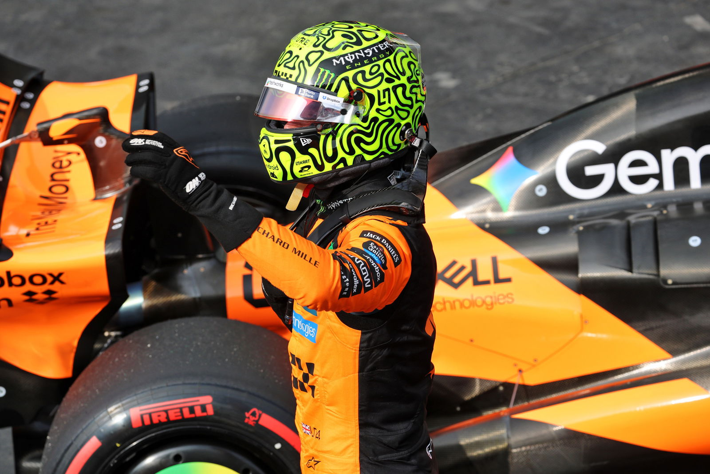

Lando Norris Garante Pole Position em Interlagos
O piloto britânico Lando Norris, da McLaren, conquistou a pole position para o Grande Prêmio de São Paulo de 2025, realizado no circuito de Interlagos. Com uma volta de 1:09.511, Norris demonstrou excelente desempenho na qualificação, consolidando a McLaren como uma das principais forças da temporada.
Esta é a sexta pole position da temporada para Norris, reafirmando seu status como um dos pilotos mais consistentes e rápidos da Fórmula 1 em 2025. O desempenho impressionante do piloto britânico reflete o trabalho excepcional da equipe McLaren, que tem se destacado significativamente nesta temporada.
Desempenho na Sprint
Antes da qualificação principal, Norris também conquistou a vitória na prova de sprint do fim de semana, vencendo de forma convincente. Com uma margem de 0.097 segundos sobre o segundo colocado, Kimi Antonelli da Mercedes, Norris demonstrou domínio absoluto no circuito paulista.
O desempenho na sprint foi crucial para consolidar a confiança e o momentum para a qualificação, onde Norris novamente se mostrou superior aos seus concorrentes. A combinação de velocidade, precisão e consistência do piloto britânico tem sido a marca registrada de sua temporada.
Contexto do Campeonato
O Grande Prêmio de São Paulo é uma das provas mais tradicionais e desafiadoras do calendário da Fórmula 1. O circuito de Interlagos, localizado em São Paulo, é conhecido por suas curvas técnicas, mudanças de elevação e condições climáticas imprevisíveis que tornam a competição ainda mais emocionante.
Com a pole position garantida, Lando Norris parte como grande favorito para a vitória na corrida principal. No entanto, a Fórmula 1 sempre reserva surpresas, e outros pilotos como Oscar Piastri (McLaren), Lewis Hamilton e Max Verstappen ainda possuem chances significativas de conquistar o pódio.
Expectativas para a Corrida
A corrida principal do GP de São Paulo promete ser emocionante, com várias equipes em condições competitivas. A McLaren, com dois pilotos fortes, busca consolidar sua liderança no campeonato de construtores, enquanto Mercedes e Red Bull tentam recuperar o terreno perdido.
As condições meteorológicas também podem desempenhar um papel importante na prova. Interlagos é famoso por mudanças rápidas de clima, o que pode criar oportunidades para estratégias diferentes e resultados inesperados. Os fãs de Fórmula 1 podem esperar uma competição acirrada e cheia de ação.
Importância para o Brasil
O Grande Prêmio de São Paulo é um evento de grande importância para o Brasil e para a Fórmula 1. O circuito de Interlagos é um dos mais icônicos do mundo, com uma história rica em momentos memoráveis e vitórias inesperadas. A presença de pilotos brasileiros e a paixão dos fãs locais tornam este fim de semana ainda mais especial.
Para os apaixonados por automobilismo no Brasil, este é um dos eventos mais aguardados do ano, representando a oportunidade de acompanhar de perto a elite da Fórmula 1 em ação em solo brasileiro.
Conclusão
Com a pole position conquistada, Lando Norris está em excelente posição para vencer o Grande Prêmio de São Paulo. Seu desempenho consistente ao longo da temporada e sua velocidade no circuito de Interlagos o colocam como o grande favorito para o pódio. A corrida promete ser emocionante e cheia de reviravoltas, mantendo os fãs de Fórmula 1 na beira do assento.
💬 Comentários e Discussão
Deixe seu comentário